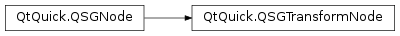

QSGTransformNode¶
Synopsis¶
Functions¶
- def
combinedMatrix() - def
matrix() - def
setCombinedMatrix(matrix) - def
setMatrix(matrix)
Detailed Description¶
The
PySide2.QtQuick.QSGTransformNodeclass implements transformations in the scene graphTransformations apply the node’s subtree and can be nested. Multiple transform nodes will be accumulated by intersecting all their matrices. The accumulation happens as part of the rendering.
The transform nodes implement a 4x4 matrix which in theory supports full 3D transformations. However, because the renderer optimizes for 2D use-cases rather than 3D use-cases, rendering a scene with full 3D transformations needs to be done with some care.
Note
All classes with QSG prefix should be used solely on the scene graph’s rendering thread. See Scene Graph and Rendering for more information.
-
class
PySide2.QtQuick.QSGTransformNode¶ Create a new
PySide2.QtQuick.QSGTransformNodewith its matrix set to the identity matrix.
-
PySide2.QtQuick.QSGTransformNode.combinedMatrix()¶ Return type: PySide2.QtGui.QMatrix4x4Set during rendering to the combination of all parent matrices for that rendering pass.
-
PySide2.QtQuick.QSGTransformNode.matrix()¶ Return type: PySide2.QtGui.QMatrix4x4Returns this transform node’s matrix.
-
PySide2.QtQuick.QSGTransformNode.setCombinedMatrix(matrix)¶ Parameters: matrix – PySide2.QtGui.QMatrix4x4Sets the combined matrix of this matrix to
transform.This function is meant to be called by the node preprocessing prior to rendering the tree, so it will not mark the tree as dirty.
-
PySide2.QtQuick.QSGTransformNode.setMatrix(matrix)¶ Parameters: matrix – PySide2.QtGui.QMatrix4x4Sets this transform node’s matrix to
matrix.
© 2018 The Qt Company Ltd. Documentation contributions included herein are the copyrights of their respective owners. The documentation provided herein is licensed under the terms of the GNU Free Documentation License version 1.3 as published by the Free Software Foundation. Qt and respective logos are trademarks of The Qt Company Ltd. in Finland and/or other countries worldwide. All other trademarks are property of their respective owners.